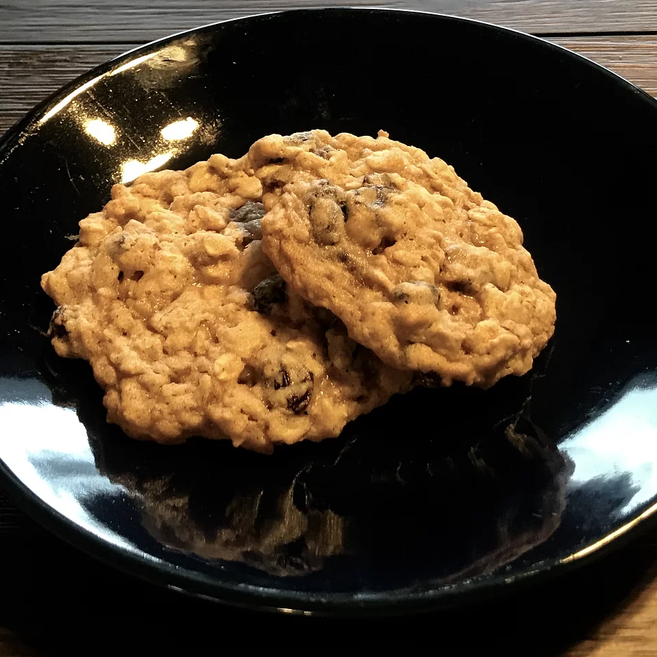

Oatmeal Raisin Cookies

Now unless you are a child you will realize oatmeal is by far the best
flavor of cookies. I am open to debate however I will always defend this underapreciated
snack.
Ingredients
- 3/4 cup butter, softened
- 3/4 cup white sugar
- 3/4 cup packed light brown sugar
- 2 eggs
- 1 teaspoon vanilla extract
- 1 3/4 cups all-purpose flower
- 1 teaspoon baking soda
- ¾ teaspoon ground cinnamon
- ¾ teaspoon ground cinnamon
- 2 ¾ cups rolled oats
- 1 cup raisins
Steps
- Preheat oven to 375 degrees F
- In large bowl cream together butter, white sugar, brown sugar
ubtil smooth. Beat in eggs and vanilla until fluffy. Stir together flour,
baking soda, cinnamon, and salt. Gradually beat into butter mixture, stir in
oats and raisins, drop by teaspoonfuls onto ungreased cookie sheets,
- Bake 8-10 min in oven. Cool slightly, remove from sheet to wire rack.
cool completely.